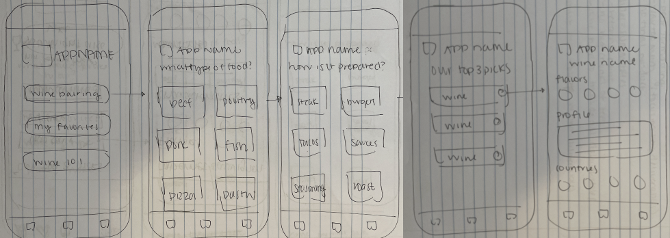
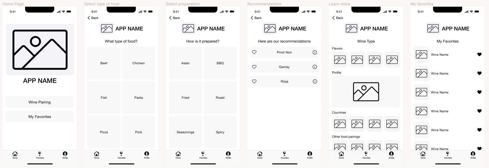

We created WiKnow for those moments when you find yourself at the wine shop, paralyzed, wondering what the difference is between Merlot and Mourvedre. We saw a product gap in the wine space that would give beginners easily digestible information and help them select wines to pair with food. Google was sometimes too vague - pair red wine with red meat - and asking for help at the shop can be intimidating. How could we create a solution that was not only approachable, but demystifies the world of wine for beginners? Scroll to learn more about how we did just that.
Three designers
User experience designer
Three week sprint
User Interviews
Affinity Map
Problem Statement
Brainstorm
Feature Prioritization
Competitor Analysis
Sketches
Digital Wireframes
Prototype
User Testing
Design Iteration
Final Prototype
We began by conducting five user interviews of beginner wine drinkers to understand (1) what tools and resources they use to find a food and wine pairing and (2) what they consider when choosing a wine to pair with food. We discovered beginner wine drinkers need an easy, approachable resource to help them select a wine to pair with food because they don't have a good knowledge of wine yet, but want to learn more. We believe creating a wine pairing app will give wine novices an easy, approachable tool to find wine pairings and expand their wine knowledge.
“I struggle choosing wines due to my limited knowledge of them.” - Jeff, 56
“I would like to get better at wine pairing, but don't know where to begin.” - Scott, 31
But first, do other solutions like this already exist? We performed a competitor analysis to find out. A handful of apps and websites exist that solved a similar problem, but most of them were not created with beginners in mind. The information was way over our users heads, and we wanted to make sure our users weren’t intimidated from the start. We also found that the tools were not easy to use and we had trouble finding the pairing feature. Our solution would focus on beginners and the right level of information that would be valuable to them, not too simple, but not too complex.
Our team brainstormed on how we might do this and landed on three key features:
Next, it was time to start designing. We began the design process by sketching initial wireframes, specifically focused on the wine pairing and learn more features. Then, we created a digital lo-fidelity prototype which we would put to the test.
 As a team, we conducted three user tests to understand if we solved our user's problem. Specifically, we wanted to answer the following questions:
Key findings from our testing include: (1) Users wanted to be able to save favorites; (2) users liked the learn more page; and (3) our app was easy to navigate.
Based on the results of our user testing, we added a “my favorites” feature so our users could save wines they'd enjoyed for easy, future reference.
Overall, feedback received on our app was positive. Our users found the wine pairing feature easy to use, the educational information valuable, and liked the favorites option. If given more time, I would like to (1) continuing to test our prototype with users; and (2) refine branding and UI elements. Additionally, I would build out the following features to address user pain points which were not able to be designed in this sprint such as: (1) add specific wine bottles to recommendations including pricing and user reviews; (2) add a link to where the user can purchase the wine; and (3) add a scan label feature.